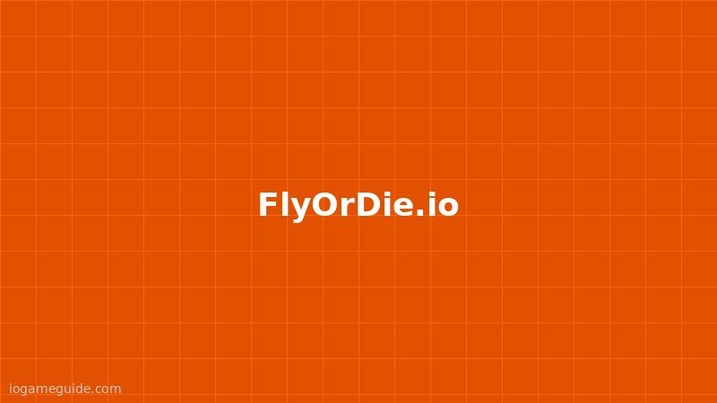
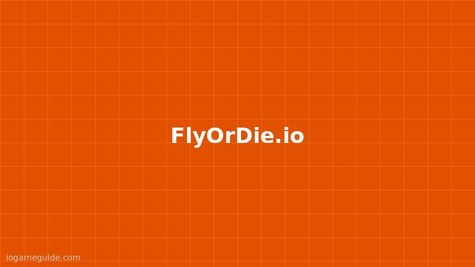

Introduction
FlyOrDie.io, now known as EvoWorld.io, is a browser‑based multiplayer survival game where you begin as a tiny fly and climb the evolution ladder to become a mighty dragon, a shark, or any of the 20+ creature forms. The core loop is simple: eat green‑highlighted food and smaller animals to gain XP, avoid red‑outlined predators, and manage your water bar while unlocking a unique ability at each tier. Each evolution grants a fresh special skill—such as a dash, a poison cloud, or a regeneration aura—that can turn the tide of a chase. The fast‑paced, free‑for‑all arena, combined with vibrant hand‑drawn graphics and a satisfying progression system, is why the game enjoys a passionate community of players who love the “fly or die” tension.
Getting Started

Getting Started 1. Visit https://flyordie.io, click “Play”, enter a nickname, and you spawn as a fly in the central meadow. 2. Controls: • Move – point the mouse toward the direction you want; the creature follows automatically. • Boost – press Space (or S) to use your current ability. As a fly you have “Beginner’s Luck,” giving a 50 % chance to dodge a predator attack for a short time. • Eat – hover over green‑highlighted items (berries, insects, meat) and click to collect them. Red‑outlined creatures are dangerous; avoid them. 3. Water bar – the blue bar at the top‑left shows hydration. Below 30 % you move slower; below 10 % you lose health. Find water drops or drink from ponds. 4. Evolution – after gathering enough XP a glowing “Evolve” button appears at the bottom. Click it to transform into the next creature, unlocking a new ability and access to larger prey. 5. Minimap – a small map in the lower‑right shows green dots for food and red dots for threats. Use it to plan routes and stay clear of crowded predator zones.
Basic Tips
Basic Tips 1. Grab water first – As soon as you spawn, look for blue water drops or a pond. A low water bar slows you down and makes you an easy target. Drinking early gives you a steady health buffer for the first few minutes. 2. Stick to green‑highlighted food – Berries, flies, and meat give XP without risk. In the opening minutes you’re small; eating only safe items lets you level up without being eaten. 3. Use Beginner’s Luck wisely – When a red‑outlined predator approaches, stay near it and let the 50 % dodge chance save you. If it fails, boost away with Space (or S) immediately; don’t wait for a second hit. 4. Evolve as soon as possible – When the “Evolve” button appears, click it. Each new form unlocks a stronger ability and expands the list of creatures you can safely eat, which dramatically raises your survival odds. 5. Keep an eye on the minimap – Green dots indicate safe food clusters; red dots show active threats. Planning a path that skirts red zones reduces the chance of an ambush, especially after you’ve just evolved.
Advanced Strategies
Advanced Strategies 1. Pick the right evolution branch – Each tier offers a distinct ability (e.g., Spider web, Bat sonar, Shark bleed). Choose a form whose ability matches your style. Aggressive hunters should evolve into predators with a high‑damage dash; cautious players can pick creatures with regeneration auras or speed boosts. 2. Control water hotspots – Water sources are limited and clustered in certain areas (the lake, river bends). By lingering near these zones you can refill your water bar and ambush prey that come to drink. Stay mobile, though—lingering too long attracts larger predators. 3. Time ability activation – Your special skill recharges after a short cooldown. Use it to close a gap when chasing a fast flyer, or to break a chase when a bigger creature locks onto you. For example, a Dragon’s fire breath can knock back pursuers, giving you seconds to escape. 4. Exploit map asymmetry – The world has forest, desert, and ocean biomes, each spawning different food and attracting different predator tiers. Target the biome where you’re the apex predator; you’ll find abundant XP and fewer threats.
Pro Tips

Pro Tips 1. Chain evolutions with a charged ability – When your ability is ready, target a high‑XP creature (e.g., fish or rabbit) and activate the boost right as you get close. This lets you eat it before it can flee, giving an XP burst that triggers an early evolution. 2. Prioritize water in high‑traffic zones – In crowded areas the water bar drops fast. Keep a water source within a short flight path; a quick sip keeps you at full health while others fall behind. 3. Use environmental hazards as weapons – Poison swamps, lava patches, and wind gusts are on the map. Lure pursuers into these areas; their damage timers often force them to retreat while you escape unharmed. 4. Learn each creature’s turn radius – Larger animals have slower turning speeds. When you’re a nimble flyer, circle around a shark’s blind spot to land a hit and retreat before it can retaliate.
Conclusion
FlyOrDie.io delivers a satisfying evolution loop with quick matches. The tension of being a tiny fly and the thrill of becoming a dragon make each session unique. With simple controls, a vibrant world, and plenty of tactics, there’s always something new to master. Jump in, start as a fly, and see how far you can climb the food chain!